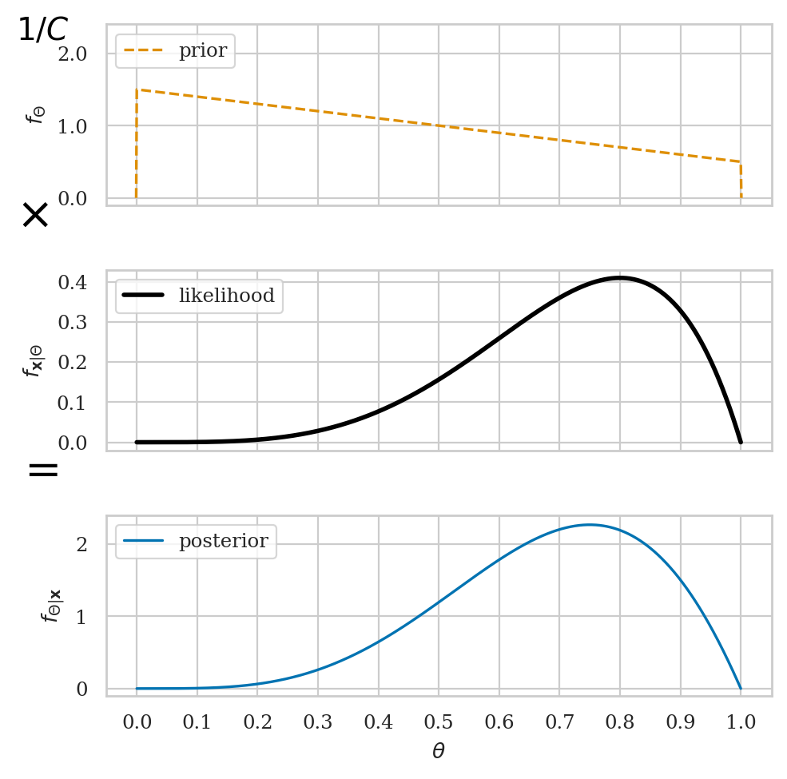
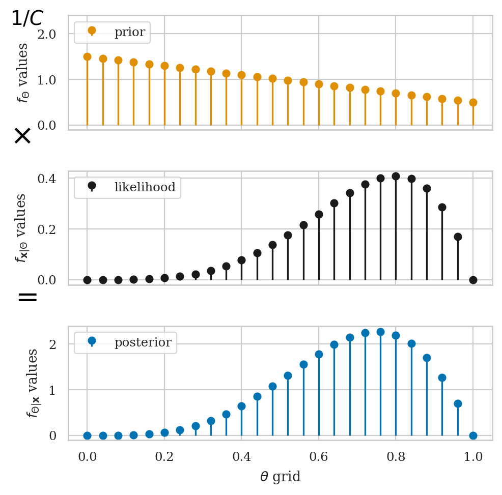
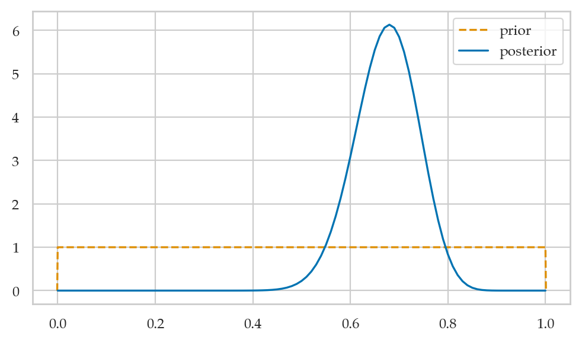
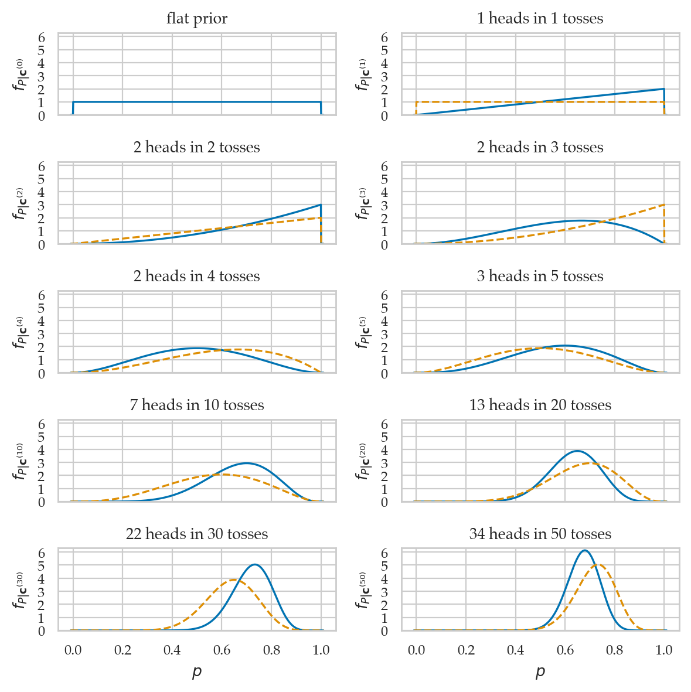
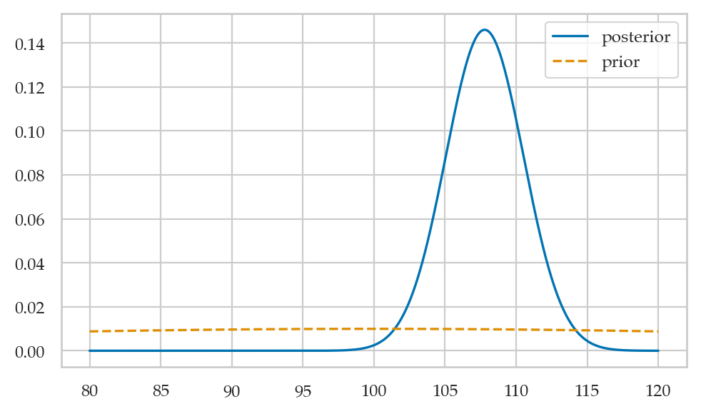
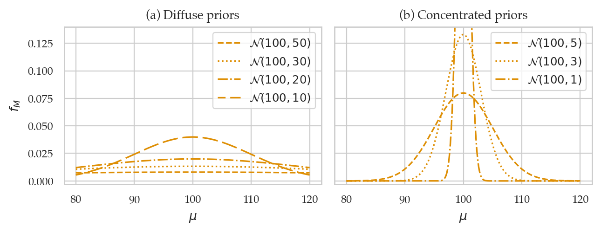

Section 5.1 — Introduction to Bayesian statistics#
This notebook contains the code examples from Section 5.1 Introduction to Bayesian statistics from the No Bullshit Guide to Statistics.
Notebook setup#
# load Python modules
import os
import numpy as np
import pandas as pd
import seaborn as sns
import matplotlib.pyplot as plt
# Figures setup
plt.clf() # needed otherwise `sns.set_theme` doesn"t work
from plot_helpers import RCPARAMS
RCPARAMS.update({"figure.figsize": (5, 3)}) # good for screen
# RCPARAMS.update({"figure.figsize": (5, 1.6)}) # good for print
sns.set_theme(
context="paper",
style="whitegrid",
palette="colorblind",
rc=RCPARAMS,
)
# High-resolution please
%config InlineBackend.figure_format = "retina"
# Where to store figures
DESTDIR = "figures/bayes/intro"
<Figure size 640x480 with 0 Axes>
# set random seed for repeatability
np.random.seed(42)
#######################################################
from ministats.utils import savefigure
Definitions#
Bayesian inference#
Bayesian updating of posterior probabilities#
from scipy.stats import binom
heads = 4
n = 5
with plt.rc_context({"figure.figsize":(5,5)}):
fig, axs = plt.subplots(3, 1, sharex=True)
eps = 0.001
ps = np.linspace(0-eps, 1.0+eps, 1000)
# prior (slightly sloped uniform)
slope = -1
prior = np.ones_like(ps) - slope/2 + slope*ps
prior[(ps < 0) | (ps > 1)] = 0
sns.lineplot(x=ps, y=prior, ax=axs[0], color="C1", ls="--", label="prior")
axs[0].set_ylabel("$f_{\\Theta}$")
axs[0].set_ylim([-0.1,2.4])
axs[0].set_yticks([0.0,1.0,2.0])
axs[0].set_yticklabels([0.0,1.0,2.0])
axs[0].legend(loc="upper left")
# add 1/C at the top
axs[0].text(-0.2, 2.2, r"$1/C$", size=14, color="black")
# add x in between
axs[0].text(-0.2, -0.4, "$\\times$", size=20, color="black")
# likelihood
likelihood = binom(n, p=ps).pmf(heads)
sns.lineplot(x=ps, y=likelihood, ax=axs[1], lw=2, color="black", label="likelihood")
axs[1].set_ylabel("$f_{\\mathbf{x}|\\Theta}$")
axs[1].set_yticks([0.0, 0.1, 0.2, 0.3, 0.4])
# add = in between
axs[1].text(-0.2, -0.1, "$=$", size=20, color="black")
# posterior
numerator = likelihood * prior
posterior = numerator / np.nansum(numerator) / (ps[1]-ps[0])
sns.lineplot(x=ps, y=posterior, ax=axs[2], color="C0", label="posterior")
axs[2].set_ylabel("$f_{\\Theta|\\mathbf{x}}$")
axs[2].set_xlabel("$\\theta$")
axs[2].set_xticks(np.linspace(0,1,11))
axs[2].set_ylim([-0.1,2.4])
axs[2].legend(loc="upper left")
filename = os.path.join(DESTDIR, "prior_times_likelihood_eq_posterior.pdf")
savefigure(fig, filename)
Saved figure to figures/bayes/intro/prior_times_likelihood_eq_posterior.pdf
Saved figure to figures/bayes/intro/prior_times_likelihood_eq_posterior.png
{kind=link}

Grid approximaiton#
from scipy.stats import binom
heads = 4
n = 5
with plt.rc_context({"figure.figsize":(5,5)}):
fig, axs = plt.subplots(3, 1, sharex=True)
# grid
ps = np.linspace(0, 1, 26)
# prior values
slope = -1
prior = np.ones_like(ps) - slope/2 + slope*ps
axs[0].stem(ps, prior, basefmt=" ", linefmt="C1-", label="prior")
axs[0].set_ylabel("$f_{\\Theta}$ values")
axs[0].set_ylim([-0.1,2.4])
axs[0].set_yticks([0.0,1.0,2.0])
axs[0].set_yticklabels([0.0,1.0,2.0])
axs[0].legend(loc="upper left")
# add 1/C at the top
axs[0].text(-0.2, 2.2, r"$1/C$", size=14, color="black")
# add x in between
axs[0].text(-0.2, -0.4, "$\\times$", size=20, color="black")
# likelihood values
likelihood = binom(n, p=ps).pmf(heads)
axs[1].stem(ps, likelihood, basefmt=" ", linefmt="k", label="likelihood")
axs[1].set_ylabel("$f_{\\mathbf{x}|\\Theta}$ values")
axs[1].legend(loc="upper left")
# add = in between
axs[1].text(-0.2, -0.1, "$=$", size=20, color="black")
# posterior values
numerator = likelihood * prior
posterior = numerator / np.nansum(numerator) / (ps[1]-ps[0])
axs[2].stem(ps, posterior, basefmt=" ", linefmt="C0-", label="posterior")
axs[2].set_ylabel("$f_{\\Theta|\\mathbf{x}}$ values")
axs[2].set_xlabel("$\\theta$ grid")
axs[2].set_ylim([-0.1,2.4])
axs[2].legend(loc="upper left")
filename = os.path.join(DESTDIR, "prior_times_likelihood_eq_posterior_grid.pdf")
savefigure(fig, filename)
Saved figure to figures/bayes/intro/prior_times_likelihood_eq_posterior_grid.pdf
Saved figure to figures/bayes/intro/prior_times_likelihood_eq_posterior_grid.png
{kind=link}

# inspect values in each array
prior[0:5], likelihood[0:4], posterior[0:5]
(array([1.5 , 1.46, 1.42, 1.38, 1.34]),
array([0.00000e+00, 1.22880e-05, 1.88416e-04, 9.12384e-04]),
array([0. , 0.00013735, 0.00204833, 0.00963941, 0.02823761]))
Bayesian inference results#
from ministats.hpdi import hpdi_from_grid
heads = 4
n = 5
eps = 0.001
ps = np.linspace(0-eps, 1.0+eps, 1000)
# prior (slightly sloped uniform)
slope = -1
prior = np.ones_like(ps) - slope/2 + slope*ps
prior[(ps < 0) | (ps > 1)] = 0
# likelihood
likelihood = binom(n, p=ps).pmf(heads)
likelihood[np.isnan(likelihood)] = 0
# posterior
numerator = likelihood * prior
posterior = numerator / np.sum(numerator)
# calculate mean, median, mode
pmean = np.sum(ps*posterior)
pmedian = ps[np.cumsum(posterior).searchsorted(0.5)]
pmode = ps[np.argmax(posterior)]
bci90 = hpdi_from_grid(ps, posterior, hdi_prob=0.9)
with plt.rc_context({"figure.figsize":(5.5,2.5)}):
# plot the posteior
porteriord = posterior / (ps[1] - ps[0])
ax = sns.lineplot(x=ps, y=porteriord, color="C0", label="posterior")
ax.set_ylabel("$f_{\\Theta|\\mathbf{x}}$")
ax.set_xlabel("$\\theta$")
ax.set_xticks(np.linspace(0,1,11))
ax.set_ylim([-0.1,2.4])
# add mean marker
ax.plot(pmean, 0, marker="D", color="C0", ls=" ", label="posterior mean")
# add median line
post_at_median = porteriord[np.nancumsum(posterior).searchsorted(0.5)]
ax.vlines(x=pmedian, ymin=0, ymax=post_at_median, color="C0", lw=0.7)
ax.plot(pmedian, post_at_median/2, marker="s", color="C0", ls=" ", label="posterior median")
# add mode marker
ax.plot(pmode, np.nanmax(porteriord), marker="^", color="C0", ls=" ", label="posterior mode")
# plot 90% credible interval
ax.hlines(0.15, bci90[0], bci90[1], color="C4", lw=2.2, zorder=0, label="90% bci for $\\theta$")
ax.legend()
filename = os.path.join(DESTDIR, "posterior_visualization.pdf")
savefigure(plt.gcf(), filename)
---------------------------------------------------------------------------
ModuleNotFoundError Traceback (most recent call last)
Cell In[8], line 1
----> 1 from ministats.hpdi import hpdi_from_grid
4 heads = 4
5 n = 5
ModuleNotFoundError: No module named 'ministats.hpdi'
bci90
[0.42126426426426417, 0.9478408408408405]
Point estimates#
# posterior mean
np.nansum(ps*posterior)
0.6818176817107525
# posterior median
cumsum = np.nancumsum(posterior)
ps[cumsum.searchsorted(0.5)]
0.6990960960960959
# posterior mode
ps[np.nanargmax(posterior)]
0.7502492492492491
Bayesian credible intervals#
from arviz.stats import hdi
post = np.random.choice(ps, size=10000, p=posterior)
hdi(post, hdi_prob=0.9)
array([0.41424324, 0.93981682])
hpdi_from_grid(ps, posterior, hdi_prob=0.9)
[0.42126426426426417, 0.9478408408408405]
Bayesian predictions#
from scipy.stats import bernoulli
np.random.seed(43)
ctoss_preds = []
for i in range(20):
p_post = np.random.choice(ps, size=1, p=posterior)
ctoss_pred = bernoulli(p=p_post).rvs(1)[0]
ctoss_preds.append(ctoss_pred)
ctoss_preds
[1, 0, 0, 1, 1, 0, 1, 1, 1, 1, 0, 0, 1, 1, 1, 0, 1, 1, 1, 0]
# # ALT. using scipy.stats vectorized params
# np.random.seed(42)
# m = 20
# ps_post = rvPpost.rvs(m)
# ctoss_preds = bernoulli(p=ps_post).rvs(m)
# ctoss_preds
TMP stuff (CUT ME)#
Example 1: estimating the probability of a biased coin#
The model is
# Sample of coin tosses observations (1=heads 0=tails)
# We assume they come from a Bernoulli distribution
ctosses = [1,1,0,0,1,0,1,1,1,1,1,0,1,1,0,0,0,1,1,1,
1,1,1,1,1,1,1,0,1,1,1,1,1,1,1,1,0,0,1,0,
0,1,0,1,0,1,0,1,1,0]
sum(ctosses), len(ctosses), sum(ctosses)/len(ctosses)
(34, 50, 0.68)
Step 1: define a grid of possible parameter values#
Define a grid of possible values for the parameter p.
ngrid1 = 101 # number of points in the grid
ps = np.linspace(0, 1, ngrid1) # [0, 0.01, ..., 1.0]
ps[0:5]
array([0. , 0.01, 0.02, 0.03, 0.04])
Step 2: Define a flat prior distribution#
# 2. Define a flat prior distribution
from scipy.stats import uniform
prior1 = uniform(0,1).pdf(ps)
prior1[0:5]
array([1., 1., 1., 1., 1.])
Step 3: compute the likelihood#
# 3. Compute the likelihood of `ctosses` for all `ps`
from scipy.stats import bernoulli
likelihood1 = np.ones(ngrid1)
for ctoss in ctosses:
likelihood_ctoss = bernoulli(p=ps).pmf(ctoss)
likelihood1 = likelihood1 * likelihood_ctoss
# ALT.
# np.prod(bernoulli(p=ps[:,np.newaxis]).pmf(ctosses), axis=1)
likelihood1[0:101:25]
# list(map(lambda x: float("{:1.3g}".format(x)), likelihood1[0:101:25]))
array([0.00000000e+00, 3.39578753e-23, 8.88178420e-16, 1.31559767e-14,
0.00000000e+00])
Step 4: calculate the numerator in Bayes’ formula#
# 4. Calculate the numerator in Bayes' formula
numerator1 = likelihood1 * prior1
numerator1[0:101:25]
# list(map(lambda x: float("{:1.3g}".format(x)), numerator1[0:101:25]))
array([0.00000000e+00, 3.39578753e-23, 8.88178420e-16, 1.31559767e-14,
0.00000000e+00])
Step 5: normalize to obtain the posterior distribution#
posterior1 = numerator1 / np.sum(numerator1)
posterior1[0:101:25]
# list(map(lambda x: float("{:1.3g}".format(x)), posterior1[0:101:25]))
array([0.00000000e+00, 8.52710007e-11, 2.23028862e-03, 3.30357328e-02,
0.00000000e+00])
np.sum(posterior1).round(15)
1.0
Visualize the posterior#
posterior1d = posterior1 / (ps[1] - ps[0])
sns.lineplot(x=ps, y=posterior1d, label="posterior")
sns.lineplot(x=ps, y=prior1, ls="--", label="prior");
{kind=link}
# FIGURES ONLY
psplus = [-0.001] + list(ps) + [1.001]
prior1plus = [0] + list(prior1) + [0]
sns.lineplot(x=psplus, y=prior1plus, ls="--", label="prior", color="C1");
sns.lineplot(x=ps, y=posterior1d, label="posterior", color="C0")
filename = os.path.join(DESTDIR, "example1_ctosses_prior_and_posterior.pdf")
savefigure(plt.gcf(), filename)
Saved figure to figures/bayes/intro/example1_ctosses_prior_and_posterior.pdf
Saved figure to figures/bayes/intro/example1_ctosses_prior_and_posterior.png
{kind=link}

Samples from the posterior#
Let’s generate some samples from the posterior distribution.
post1 = np.random.choice(ps, size=10_000, replace=True, p=posterior1)
sns.kdeplot(post1);
{kind=link}
Summarize the posterior#
We’ll learn more about ArviZ later in this notebooks. It’s like the a Swiss Army knife for for summarizing, visualizing, and plotting the Bayesian analysis results.
Posterior mean#
postmu1 = np.sum(ps * posterior1)
postmu1
0.673076923076923
# ALT. compute the mean of the samples
np.mean(post1)
0.674386
# ALT2. using the `summary` function from the ArviZ library
import arviz as az
az.summary(post1, kind="stats")
| mean | sd | hdi_3% | hdi_97% | |
|---|---|---|---|---|
| x | 0.674 | 0.065 | 0.54 | 0.78 |
The summary also includes the posterior standard deviation and the limits of a “94% high density interval” that contains 94% of the posterior probability density.
Posterior standard deviation#
poststd2 = np.sum( (ps-postmu1)**2*posterior1 )
poststd = np.sqrt(poststd2)
poststd
0.06443431329777002
# ALT. using the samples from the posterior
poststd2 = 1/len(post1)*np.sum((post1 - postmu1)**2)
poststd = np.sqrt(poststd2)
poststd
0.0646644932431279
Posterior median#
cumsum1 = np.cumsum(posterior1)
idxMed = cumsum1.searchsorted(0.5)
ps[idxMed]
0.68
np.median(post1)
0.68
Posterior quartiles#
idxQ1 = cumsum1.searchsorted(0.25)
idxQ2 = cumsum1.searchsorted(0.5)
idxQ3 = cumsum1.searchsorted(0.75)
ps[idxQ1], ps[idxQ2], ps[idxQ3]
(0.63, 0.68, 0.72)
Posterior percentiles#
idxP03 = cumsum1.searchsorted(0.03)
idxP97 = cumsum1.searchsorted(0.97)
ps[idxP03], ps[idxP97]
(0.55, 0.79)
# ALT. using the `summary` function from the ArviZ library
az.summary(post1, kind="stats", stat_focus="median")
| median | mad | eti_3% | eti_97% | |
|---|---|---|---|---|
| x | 0.68 | 0.04 | 0.54 | 0.79 |
Posterior mode#
ps[np.argmax(posterior1)]
0.68
# BONUS --- fit a Gaussian KDE curve approx. to the posterior samples `post1`
# then compute the max of that the KDE curve.
from scipy.stats import gaussian_kde
post1_kde = gaussian_kde(post1)
ps[np.argmax(post1_kde(ps))]
0.68
# ALT2. using a deeply-hidden ArviZ helper function
az.plots.plot_utils.calculate_point_estimate("mode", post1)
0.68140625
Note you will rarely need to call this function like shown above, since the posterior mean is automatically displayed in ArviZ plots. More on this coming up soon! Really cool stuff, but let’s stick to numerical summaries (like the ones we computed in Section 1.3).
Credible interval#
from ministats.hpdi import hpdi_from_grid
hpdi_from_grid(ps, posterior1, hdi_prob=0.9)
[0.54, 0.76]
# ALT. using the `summary` function from the ArviZ library
az.summary(post1, kind="stats", hdi_prob=0.9)
| mean | sd | hdi_5% | hdi_95% | |
|---|---|---|---|---|
| x | 0.674 | 0.065 | 0.56 | 0.77 |
Predictions#
np.random.seed(43)
from scipy.stats import bernoulli
ctoss_preds = []
for i in range(20):
p_post = np.random.choice(ps, p=posterior1)
ctoss_pred = bernoulli(p=p_post).rvs(1)[0]
ctoss_preds.append(ctoss_pred)
ctoss_preds
[0, 1, 0, 1, 0, 0, 1, 1, 1, 0, 0, 0, 1, 0, 1, 1, 1, 0, 1, 1]
Visualizing the posterior updates over time#
# FIGURES ONLY
from scipy.stats import bernoulli
from scipy.stats import beta
from ministats import plot_pdf
n_rows = 10
ns = [0, 1, 2, 3, 4, 5, 10, 20, 30, 50]
outcomes = [0, 1, 2, 2, 2, 3, 7, 13, 22, 34]
# outcomes were generated from coin with true p = 0.7
assert len(outcomes) == n_rows
assert len(ns) == n_rows
assert outcomes == [sum(ctosses[:n]) for n in ns]
n_rows = int(len(outcomes))
with plt.rc_context({"figure.figsize":(6,6)}):
fig, axs_matrix = plt.subplots(n_rows//2, 2, sharex=True)
axs = [ax for row in axs_matrix for ax in row]
priorRV = None
for i, ax in enumerate(axs):
heads, n = outcomes[i], ns[i]
rvPpost = beta(a=1+heads, b=1+n-heads)
plot_pdf(rvPpost, rv_name="P", xlims=[-0.01,1.01], ax=ax)
if i==0:
ax.set_title("flat prior")
else:
ax.set_title(f"{heads} heads in {n} tosses")
ax.set_yticks([0,1,2,3,4,5,6])
# superimpose a plot of the prior as a dashed line
if priorRV:
plot_pdf(priorRV, rv_name="P", color="C1", ax=ax, ls="--", xlims=[-0.01,1.01])
priorRV = rvPpost
ax.set_ylabel("$f_{P|\\mathbf{c}^{(%i)}}$" % n)
ax.set_ylim(0,6.3)
axs[8].set_xlabel("$p$")
axs[9].set_xlabel("$p$")
filename = os.path.join(DESTDIR, "panel_coin_posteriors.pdf")
savefigure(fig, filename)
Saved figure to figures/bayes/intro/panel_coin_posteriors.pdf
Saved figure to figures/bayes/intro/panel_coin_posteriors.png
{kind=link}

Example 2: estimating the IQ score#
# Sample of IQ observations
iqs = [ 82.6, 105.5, 96.7, 84.0, 127.2, 98.8, 94.3,
122.1, 86.8, 86.1, 107.9, 118.9, 116.5, 101.0,
91.0, 130.0, 155.7, 120.8, 107.9, 117.1, 100.1,
108.2, 99.8, 103.6, 108.1, 110.3, 101.8, 131.7,
103.8, 116.4]
We assume the IQ scores come from a population with standard deviation \(\sigma = 15\).
Step 1: define a grid of possible values of the mean#
ngrid2 = 1001 # number of points in the grid
mus = np.linspace(80, 120, ngrid2)
mus[0:5]
array([80. , 80.04, 80.08, 80.12, 80.16])
Step 2: define the prior for the unknown mean#
We’ll use a normal centered at 100 with std 40 as the prior
from scipy.stats import norm
mu0 = 100
sigma0 = 40 # very wide standard deviation of the prior
prior2 = norm(loc=mu0, scale=sigma0).pdf(mus)
prior2[0:1001:300]
list(map(lambda x: float("{:1.3g}".format(x)), prior2[0:1001:300]))
[0.0088, 0.00978, 0.00992, 0.00921]
Step 3: compute the likelihood of the data#
sigma = 15 # known population standard deviation
likelihood2 = np.ones(ngrid2)
for iq in iqs:
likelihood_iq = norm(loc=mus, scale=sigma).pdf(iq)
likelihood2 = likelihood2 * likelihood_iq
# ALT. one-line computation using NumPy broadcasting rules
# likelihood2 = np.prod(norm(loc=mus[:,np.newaxis], scale=sigma).pdf(iqs), axis=1))
likelihood2[0:1001:300]
# list(map(lambda x: float("{:1.3g}".format(x)), likelihood2[0:1001:300]))
array([1.23613569e-77, 1.80497559e-62, 1.20898934e-55, 3.71466415e-57])
Steps 4: calculate the numerator in Bayes’ rule formula#
numerator2 = likelihood2 * prior2
numerator2[0:1001:300]
# list(map(lambda x: float("{:1.3g}".format(x)), numerator2[0:1001:300]))
array([1.08800129e-79, 1.76455630e-64, 1.19977849e-57, 3.41999972e-59])
Steps 5: normalize to obtain the posterior distribution#
# 5. Normalize to obtain the posterior distribution
posterior2 = numerator2 / np.sum(numerator2)
posterior2[0:1001:300]
list(map(lambda x: float("{:1.3g}".format(x)), posterior2[0:1001:300]))
[2.03e-25, 3.29e-10, 0.00224, 6.37e-05]
np.sum(posterior2)
0.9999999999999999
Visualize the posterior#
posterior2d = posterior2 / (mus[1] - mus[0])
sns.lineplot(x=mus, y=posterior2d, label="posterior")
sns.lineplot(x=mus, y=prior2, ls="--", label="prior");
# FIGURES ONLY
filename = os.path.join(DESTDIR, "example2_iq_prior_and_posterior.pdf")
savefigure(plt.gcf(), filename)
Saved figure to figures/bayes/intro/example2_iq_prior_and_posterior.pdf
Saved figure to figures/bayes/intro/example2_iq_prior_and_posterior.png
{kind=link}

Summarize the posterior#
Posterior mean#
np.sum(mus * posterior2)
107.78678422532585
Posterior median#
cumsum2 = np.cumsum(posterior2)
mus[cumsum2.searchsorted(0.5)]
107.8
Posterior mode#
mus[np.argmax(posterior2)]
107.8
Credible interval for the mean#
from ministats.hpdi import hpdi_from_grid
hpdi_from_grid(mus, posterior2, hdi_prob=0.9)
[103.16, 112.16]
from ministats import ci_mean
ci_mean(iqs, method="a", alpha=0.1)
[102.83429390645762, 112.81237276020906]
Predictions#
np.random.seed(43)
sigma = 15 # known population standard deviation
iq_preds = []
for i in range(7):
mu_post = np.random.choice(mus, p=posterior2)
iq_pred = norm(loc=mu_post, scale=sigma).rvs(1)[0]
iq_preds.append(iq_pred)
np.round(iq_preds, 2)
array([ 89.64, 110.31, 112.65, 121.25, 92.55, 132.49, 98.97])
Hypothesis test#
mu100 = mus.searchsorted(100)
np.sum(posterior2[0:mu100])
0.0021359730162427413
from scipy.stats import ttest_1samp
tt_res = ttest_1samp(iqs, 100, alternative="greater")
tt_res.statistic, tt_res.pvalue
(2.664408108831371, 0.006232014580899188)
Explanations#
Grid approximation details#
Choosing priors#
from ministats.hpdi import hpdi_from_grid
def get_post_mean_stats(sample, sigma=15, prior_rv=None, ngrid=10001, xlims=[70,130],
stats=["mean", "median", "mode", "bci90", "prob_lt_100"]):
mus = np.linspace(*xlims, ngrid)
prior = prior_rv.pdf(mus)
likelihoodsM = norm(loc=mus[:,np.newaxis], scale=sigma).pdf(sample)
likelihood = np.prod(likelihoodsM, axis=1)
numerator = likelihood * prior
posterior = numerator / np.sum(numerator)
# compute stats
results = {}
if "mean" in stats:
post_mean = np.sum(mus * posterior)
results["post mean"] = post_mean
if "median" in stats:
cumsum = np.cumsum(posterior)
post_median = mus[cumsum.searchsorted(0.5)]
results["post median"] = post_median
if "mode" in stats:
post_mode = mus[np.argmax(posterior)]
results["post mode"] = post_mode
if "bci90" in stats:
ci90 = hpdi_from_grid(mus, posterior, hdi_prob=0.9)
results["bci90"] = [ci90[0].round(3), ci90[1].round(3)]
if "prob_lt_100" in stats:
idx100 = mus.searchsorted(100)
prob_lt_100 = np.sum(posterior[0:idx100])
results["prob_lt_100"] = prob_lt_100
return results
# frequentist summary
from ministats import ci_mean
np.mean(iqs), ci_mean(iqs, alpha=0.1)
(107.82333333333334, [102.83429390645762, 112.81237276020906])
priors = [
norm(loc=100, scale=50),
norm(loc=100, scale=30),
norm(loc=100, scale=20),
norm(loc=100, scale=10),
norm(loc=100, scale=5),
norm(loc=100, scale=3),
norm(loc=100, scale=1),
]
def get_label(prior):
mu = str(prior.kwds["loc"])
sigma = str(prior.kwds["scale"])
return r"$\mathcal{N}(" + mu + "," + sigma + ")$"
linestyles = ["dashed", "dotted", "dashdot", (5, (10, 3))]
xlims = [80,120]
with plt.rc_context({"figure.figsize":(6.5,2.6)}):
fig, (ax1,ax2) = plt.subplots(1,2, sharey=True)
for prior, ls in zip(priors[0:4], linestyles):
plot_pdf(prior, ax=ax1, ls=ls, color="C1", xlims=xlims, label=get_label(prior))
for prior, ls in zip(priors[4:], linestyles):
plot_pdf(prior, ax=ax2, ls=ls, color="C1", xlims=xlims, label=get_label(prior))
ax1.set_ylim(-0.003, 0.14)
ax1.set_xlabel(r"$\mu$")
ax1.set_ylabel(r"$f_M$")
ax1.set_title("(a) Diffuse priors")
ax2.set_xlabel(r"$\mu$")
ax2.set_title("(b) Concentrated priors")
# FIGURES ONLY
filename = os.path.join(DESTDIR, "different_priors_for_example2.pdf")
savefigure(plt.gcf(), filename)
Saved figure to figures/bayes/intro/different_priors_for_example2.pdf
Saved figure to figures/bayes/intro/different_priors_for_example2.png
{kind=link}

list(zip([1,2,3],[6,8]))
[(1, 6), (2, 8)]
results_list = []
for prior in priors:
stats = get_post_mean_stats(iqs, prior_rv=prior)
result = prior.kwds.copy()
stats["bci90"] = [np.round(stats["bci90"][0], 2), np.round(stats["bci90"][1], 2)]
result.update(stats)
results_list.append(result)
results = pd.DataFrame(results_list)
results = results.round({"post mean":2, "post median":2, "post mode":2, "prob_lt_100":5})
results
#print(results.to_latex(index=False,formatters=[lambda x: "$" + str(x) + "$"]*7))
| loc | scale | post mean | post median | post mode | bci90 | prob_lt_100 | |
|---|---|---|---|---|---|---|---|
| 0 | 100 | 50 | 107.80 | 107.80 | 107.80 | [103.22, 112.22] | 0.00216 |
| 1 | 100 | 30 | 107.76 | 107.76 | 107.76 | [103.19, 112.16] | 0.00221 |
| 2 | 100 | 20 | 107.68 | 107.68 | 107.68 | [103.16, 112.08] | 0.00232 |
| 3 | 100 | 10 | 107.28 | 107.28 | 107.28 | [102.86, 111.56] | 0.00292 |
| 4 | 100 | 5 | 106.02 | 106.02 | 106.02 | [102.05, 109.95] | 0.00609 |
| 5 | 100 | 3 | 104.27 | 104.27 | 104.27 | [100.92, 107.58] | 0.01737 |
| 6 | 100 | 1 | 100.92 | 100.92 | 100.92 | [99.32, 102.41] | 0.16280 |
Bayesian hypothesis testing#
Bayesian decision theory#
Bayesian model comparison#
TODO: ADD FORMULAS
Bayes factors#
# under H0 = point-prior at mu=100
from scipy.stats import norm
sigma = 15 # known population standard deviation
mlikelihood_H0 = np.prod(norm(loc=100, scale=sigma).pdf(iqs))
mlikelihood_H0
5.415023175654286e-57
We’ll set a prior on the effect size \(\Delta = \mu / \sigma\), using the Cauchy distribution (very fat tails).
from scipy.stats import cauchy
r = 1 # scale for the Cauchy prior
plot_pdf(cauchy(scale=r), xlims=[-5,5]);
{kind=link}
from scipy.integrate import quad
r = 1 # scale for the Cauchy prior
prior_delta = cauchy(scale=r)
delta_max = 10
def integrand(delta):
# Convert delta into the mean under H1: mu = 100 + delta * sigma
mu = 100 + delta * sigma
# Likelihood as the product of normal densities for each observation
likelihood = np.prod(norm(loc=mu, scale=sigma).pdf(iqs))
prior = cauchy(loc=0, scale=r).pdf(delta)
return likelihood * prior
mlikelihood_HA, _ = quad(integrand, -delta_max, delta_max)
print(mlikelihood_HA)
simple_BF_A0 = mlikelihood_HA / mlikelihood_H0
simple_BF_A0
3.647361365721922e-56
6.7356338974139645
mugrid = np.linspace(-50, 250, 1001)
# under HA = diffuse prior
deltas = (mugrid-100) / sigma
prior_rv = cauchy(scale=r)
prior = prior_rv.pdf(deltas)
norm_const = prior_rv.cdf(10) - prior_rv.cdf(-10)
prior = prior / np.sum(prior) * norm_const
likelihood_HA = np.prod(norm(loc=mugrid[:,np.newaxis], scale=sigma).pdf(iqs), axis=1)
mlikelihood_HA_alt = np.sum(likelihood_HA * prior)
print(mlikelihood_HA_alt)
simple_BF_A0_alt = mlikelihood_HA_alt / mlikelihood_H0
simple_BF_A0_alt
3.649465841847485e-56
6.739520263284058
Using the Jeffrey-Zellner-Siow (JZS) prior#
import numpy as np
from scipy.stats import norm, cauchy
from scipy.integrate import quad
# finite integration limits to avoid `np.inf`
simgma_max = 50
delta_max = 10
# Known mean under H0
mu_0 = 100
# Scale parameter under H1
r = 0.707 # scale for the Cauchy prior
# Define the marginal likelihood under H0 using Jeffreys prior for sigma
def marginal_likelihood_H0(iqs, mu_0):
"""
Marginal likelihood under H0 with Jeffreys prior for sigma.
"""
def integrand(sigma):
# Likelihood as the product of normal densities for each observation
likelihood = np.prod(norm.pdf(iqs, loc=mu_0, scale=sigma))
# ALT.
# likelihood = np.prod([norm.pdf(iq, loc=mu_0, scale=sigma) for iq in iqs])
prior = 1 / sigma # Jeffrey's prior for sigma
return likelihood * prior
result, _ = quad(integrand, 0, simgma_max) # limit=1000)
return result
m0 = marginal_likelihood_H0(iqs, mu_0)
# print(m0)
# Define the marginal likelihood under H1, integrating over delta and sigma
def marginal_likelihood_HA(iqs, mu_0):
"""
Marginal likelihood under H1 integrating over delta and sigma.
"""
def integrand(delta, sigma):
# Convert delta into the mean under H1: mu = mu_0 + delta * sigma
mu = mu_0 + delta * sigma
# Likelihood as the product of normal densities for each observation
likelihood = np.prod(norm.pdf(iqs, loc=mu, scale=sigma))
# ALT.
# likelihood = np.prod([norm.pdf(iq, loc=mu, scale=sigma) for iq in iqs])
prior_delta = cauchy(loc=0, scale=r).pdf(delta)
prior_sigma = 1 / sigma # Jeffrey's prior for sigma
return likelihood * prior_delta * prior_sigma
# Inner integral sigma for a given delta
def integrate_delta(delta):
return quad(lambda sigma: integrand(delta, sigma), 0, simgma_max)[0]
# Outer integral over delta
result, _ = quad(integrate_delta, -delta_max, delta_max)
return result
mA = marginal_likelihood_HA(iqs, mu_0)
# print(mA)
# Compute the Bayes factor
BF_A0 = mA / m0
print(f"Bayes Factor (BF_A0): {BF_A0}")
Bayes Factor (BF_A0): 3.720150734157744
# Bayes factor (based on JZS prior)
import pingouin as pg
pg.ttest(iqs, 100).loc["T-test","BF10"]
'3.74'
# ALT. Bayes factor (based on JZS prior)
n = len(iqs)
tstat = (np.mean(iqs) - 100) / np.std(iqs, ddof=1) * np.sqrt(n)
pg.bayesfactor_ttest(tstat, nx=n)
3.7397058298821895
# verify computation against the R package `BayesFactor`
import rpy2.robjects as robjects
from rpy2.robjects import r as runr, pandas2ri
from rpy2.robjects.packages import importr
pandas2ri.activate()
# import the BayesFactor package
BayesFactor = importr('BayesFactor')
# copy the data sample into the R workspace
robjects.globalenv["iqs"] = np.array(iqs)
# compute the Bayes factor
runr('bf = ttestBF(iqs, mu=100)')
runr('print(bf)')
Bayes factor analysis
--------------
[1] Alt., r=0.707 : 3.739463 ±0%
Against denominator:
Null, mu = 100
---
Bayes factor type: BFoneSample, JZS
# Compare to the frequentist result
from scipy.stats import ttest_1samp
ttest_1samp(iqs, popmean=100)
TtestResult(statistic=2.664408108831371, pvalue=0.012464029161798377, df=29)
Using credible intervals for decisions#
bci95 = hpdi_from_grid(mus, posterior2, hdi_prob=0.95)
bci95
[102.32, 113.03999999999999]
bci99 = hpdi_from_grid(mus, posterior2, hdi_prob=0.99)
bci99
[100.68, 114.75999999999999]
Region of practical equivalence#
mu97 = mus.searchsorted(97)
mu103 = mus.searchsorted(103)
np.sum(posterior2[mu97:mu103+1])
0.040481237454239115
Discussion#
Maximum a posteriori estimates#
Comparing Bayesian and frequentist approaches to statistical inference#
Strengths and weaknesses of Bayesian approach#
Exercises#
Exercise: campaign conversions#
See explorations/bayesianprobabilitiesworkshop/Exercise%201.ipynb
Exercise: Bayes rule for diagnostic test#
A group of researchers has designed a new inexpensive and painless test for detecting lung cancer. The test is intended to be an initial screening test for the population in general. A positive result (presence of lung cancer) from the test would be followed up immediately with medication, surgery or more extensive and expensive test. The researchers know from their studies the following facts:
Test gives a positive result in \(98\%\) of the time when the test subject has lung cancer.
Test gives a negative result in \(96\%\) of the time when the test subject does not have lung cancer.
In general population approximately one person in 1000 has lung cancer.
a) The researchers are happy with these preliminary results (about \(97\%\) success rate), and wish to get the test to market as soon as possible. How would you advise them? Base your answer on Bayes’ rule computations.
HINT: Relatively high false negative (cancer doesn’t get detected) or high false positive (unnecessarily administer medication) rates are typically bad and undesirable in tests.
Here are some probability values that can help you figure out if you copied the right conditional probabilities from the question.
P(Test gives positive | Subject does not have lung cancer) = \(4\%\)
P(Test gives positive and Subject has lung cancer) = \(0.098\%\) this is also referred to as the joint probability of test being positive and the subject having lung cancer.
Is p(has cancer|test result is positive) computed using Bayes’ formula (or its complement p(does not have cancer|test result is positive))?
Is the result p(has cancer|test result is positive)=… (or p(does not have cancer|test result is positive)=…)
Is the result motivated with something like
See here for viz https://sophieehill.shinyapps.io/base-rate-viz/
# In general population approximately one person in 1000 has lung cancer.
prev = 0.001
# Test gives a positive result in 98% of the time when the test subject has lung cancer.
# Sensitivity: the ability of a test to correctly identify patients with a disease.
pPgC = sens = 0.98
# Test gives a negative result in 96% of the time when the test subject does not have lung cancer.
# Specificity: the ability of a test to correctly identify people without the disease.
pNgNC = spec = 0.96
# P(Test gives positive | Subject does not have lung cancer) = 4%
pPgNC = (1-spec)
pPgNC
0.040000000000000036
# P(Test gives positive and Subject has lung cancer) = 0.098%
pPC = sens*prev
pPC
0.00098
pP = prev*sens + (1-prev)*(1-spec)
pP
0.04094000000000004
# Pr(C|P) = Pr(C and P) / Pr(P)
pCgP = pPC / pP
pCgP
0.02393746946751341
# ALT
# Pr(C|P) = Pr(P|C)Pr(C) / Pr(P)
pCgP = pPgC*prev / pP
pCgP
0.02393746946751341
1 - pCgP
0.9760625305324866
Given the high rate of false-positives 97.6%, I would advise the researchers not to proceed with the screening to the whole population. There will be way too many people scared for nothing. The test can be used for patients who are suspected they might have lung cancer. In such a sub-population the prevalence would be higher and thus the false-positive rate would decrease. I would possibly use a visualization tool to illustrate the base rate fallacy problem.
Exercise: algae#
see assignment2 from the BDA course